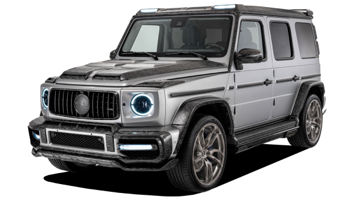

Mein Lieblingsauto

Meine Mansory G-Klasse ist für mich einfach ein Traum auf Rädern. Schon
die normale G-Klasse finde ich cool,
aber wenn Mansory da Hand anlegt, wird aus einem starken Geländewagen ein
echtes Biest. Jedes Detail fühlt
durchdacht und hochwertig an, von den Carbon-Elementen bis zu den
riesigen Felgen.
Man sieht sofort, dass das kein Auto von der Stange ist. Was ich daran am
meisten liebe, ist die Kombination
aus brachialer Power und purem Luxus.
Der Motor knallt richtig rein, und trotzdem sitzt man drin wie in einem
Wohnzimmer, nur viel spektakulärer.Dieses Auto macht einfach Laune, egal
ob auf der Straße oder im Gelände. Für mich ist die Mansory G-Klasse
mehr
als nur ein SUV. zeigt, wer ich bin: selbstbewusst, anders und nicht
auf der Suche nach Kompromissen.
Jedes Mal, wenn ich einsteige und den
Motor starte,spüre ich das besondere Gefühl, das nur so ein Auto geben
kann.